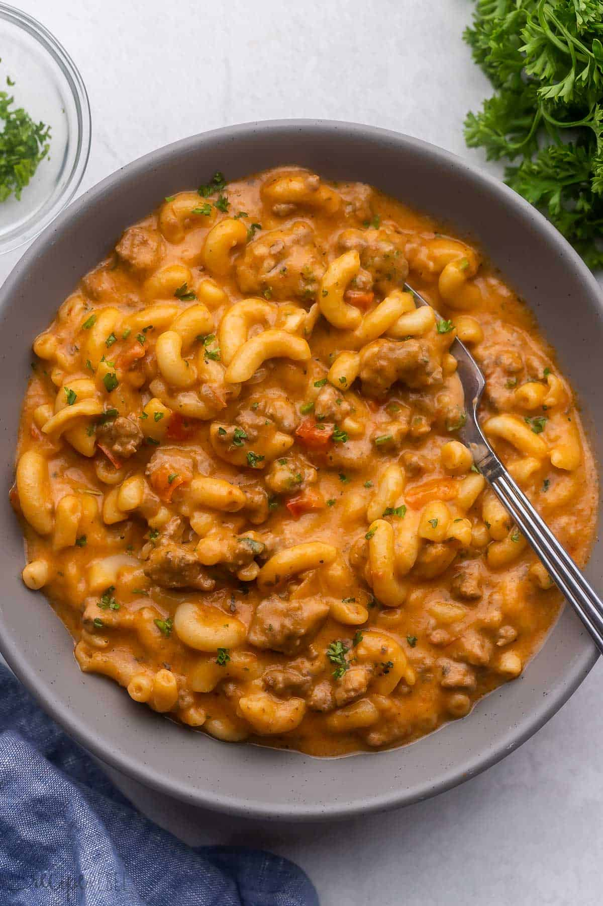

Home
Hamburger Helper

Description
This Slow Cooker Hamburger Helper is easily made entirely in the Crockpot,
with ground beef and macaroni in a cheesy, tomato-y sauce with extra veggies!
It's hearty comfort food made easy!
Prep Time
10 minutes
Cook Time
6 hours
Servings
6
Ingredients
- 1lb lean ground beef
- 1/2 medium onion (diced)
- 1 1/2 cups low sodium beef broth, (plus additional if needed)
- 1 1/2 cups milk
- 1 1/2 cups tomato pasta sauce
- 1 bell pepper (diced)
- 2 cloves garlic, (minced)
- 1 1/2 teaspoon salt
- 1 teaspoon italian seasoning
- 1/4 teaspoon red pepper flakes, (or more)
- 3 cups dry uncooked macaroni
- 1/2 cup shredded cheese
Instructions
- In a medium skillet, cook ground beef and onion until beef is browned and onion
is translucent. Add to a 4-6 quart slow cooker.
- Add in broth, milk, pasta sauce, bell pepper, garlic, salt, Italian seasoning,
and red pepper flakes and stir. Cover and cook on low for 6-8 hours or high
for 3-4 hours. (*The cook time here is really flexible — you want to cook
the red pepper and get it hot enough to cook the pasta, so you can cook anywhere
from 3 to 8 hours on low).
- About 15 minutes before serving, turn the slow cooker to high and stir in
macaroni. Check at 15 minutes, and add 5-10 extra minutes to the cook time
as needed until the pasta is al dente. If the pasta is not cooked and most
of the liquid is absorbed, add ½-1 cup additional broth or milk as
needed.
- Stir in cheese (covering for 2-3 minutes if necessary to melt the cheese),
taste and serve.
Nutrition
Calories: 430cal, Carbohydrates: 62g, Protein: 33g, Fat: 8g, Saturated Fat: 3g,
Polyunsaturated Fat: 1g, Monounsaturated Fat: 3g, Trans Fat: 0.3g, Cholesterol:
57mg, Sodium: 1121mg, Potassium: 880mg, Fiber: 2g, Sugar: 6g, Vitamin A: 1096IU,
Vitamin C: 31mg, Calcium: 176mg, Iron: 5mg